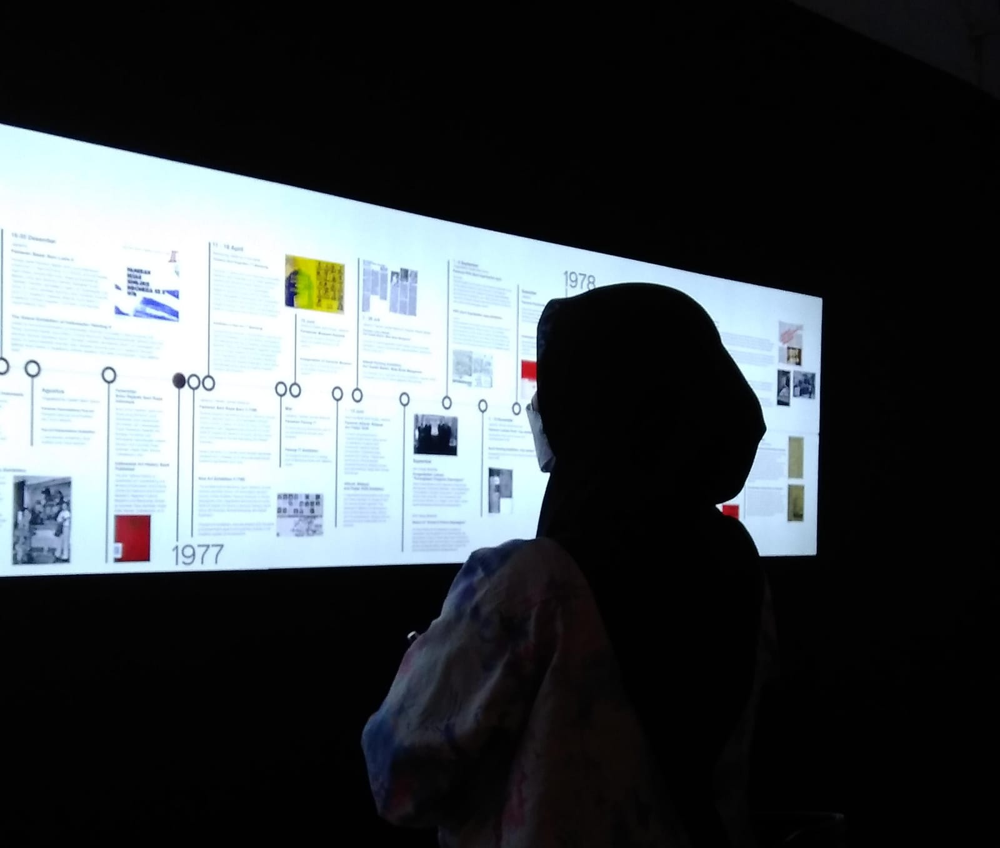
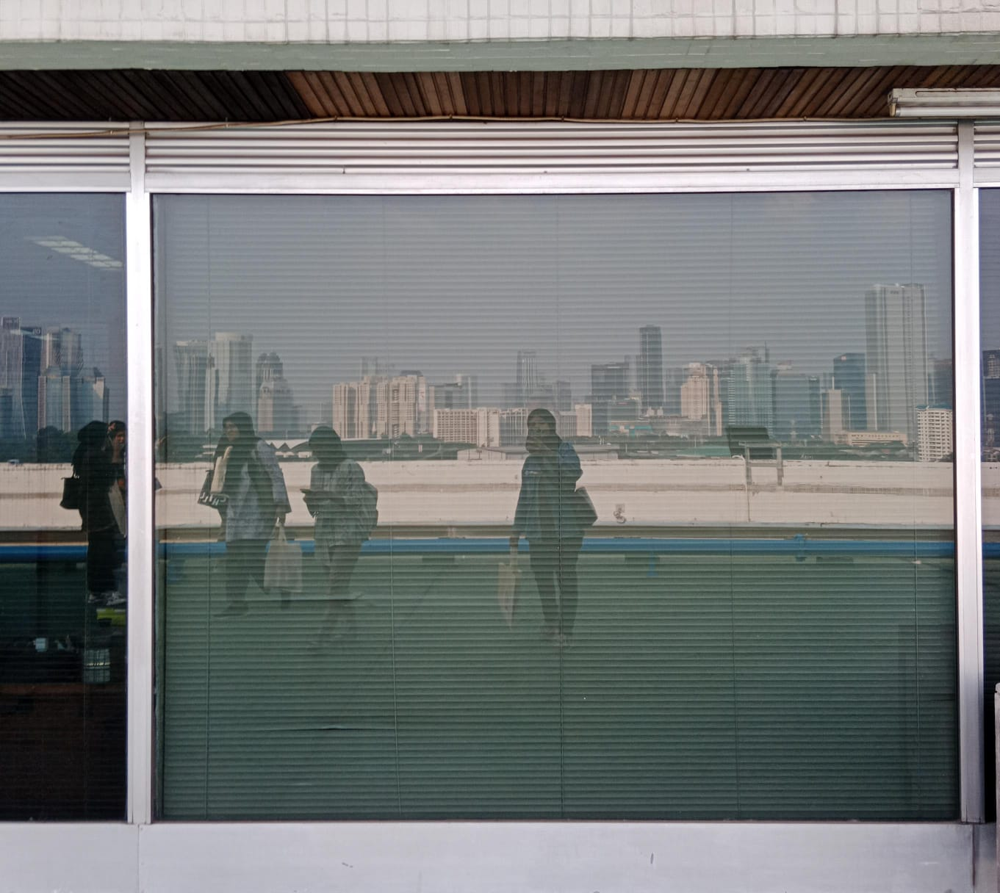
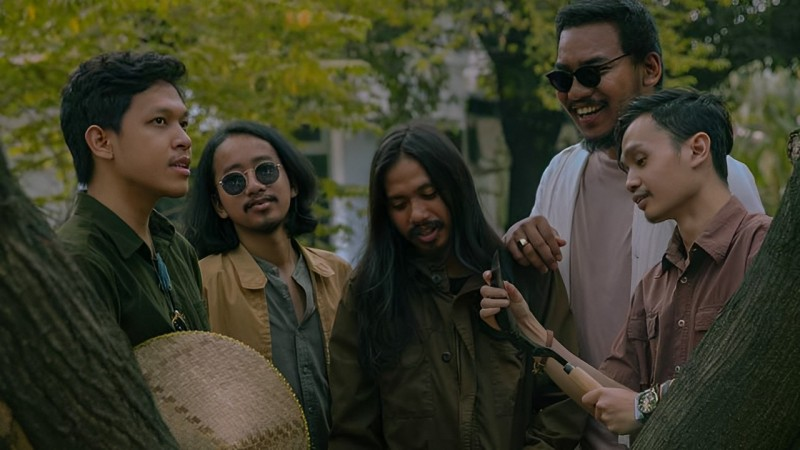
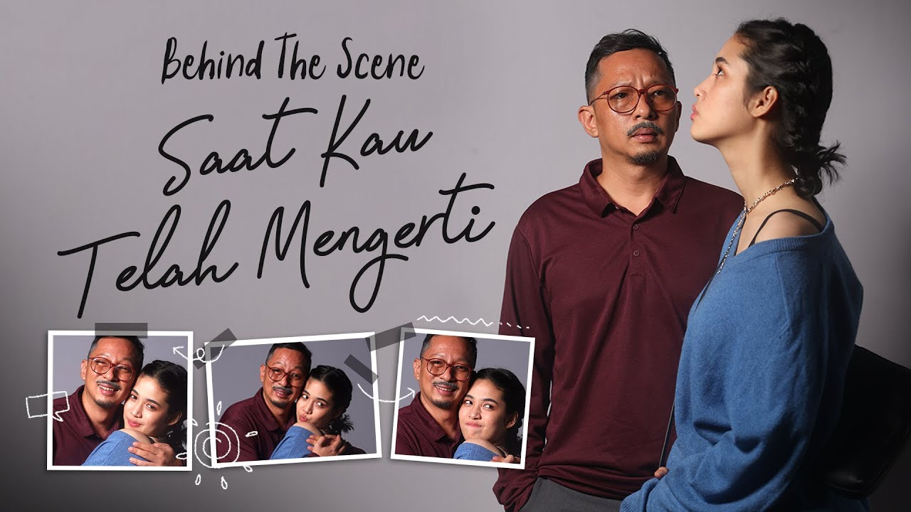

LABUHAN ZAMAN
| Cerpen |
Mana ada anak zaman sekarang yang tidak mau pacaran, Zaman sangsi akan itu.

YANG DICARI HILANG, YANG DIHARAP PULANG
| Cerpen |
Tuhan, Aku ingin mengulang waktu. Aku ingin mengulang waktu, atau kalau bisa aku ingin tidak pernah terlahir ke dunia ini.
MARAWA
| Cerpen |
Akan kulabeli bahwa Tuhan menginginkanku begini. Meratap kala marawa diganti warna kuning saja.
DI BAWAH JEMBATAN
| Cerpen |
Di bawah jembatan adalah mitos yang berkembang di kota kami, konon di bawah sana terdapat sumur di dalam air dan ditunggui oleh sosok entah seperti apa bentuknya.

.Feast, Pembawa Pesan Pemuda Dalam Lagu 'Kami Belum Tentu'
| Lagu |
Lagu ini menyoroti persepsi tentang apatisnya anak muda Indonesia terhadap isu-isu nasional.

'Saat Kau Telah Mengerti' Cerita Ayah dan Putrinya
| Lagu |
Virgoun meluncurkan lagu terbarunya yang berjudul 'Saat Kau Telah Mengerti', yang memiliki cerita dan makna yang sangat mendalam di baliknya.
Berikutnya...